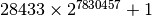

Large non-Mersenne prime¶
Problem 97
The first known prime found to exceed one million digits was discovered in 1999, and is a Mersenne prime of the form 2^(6972593)-1; it contains exactly 2,098,960 digits. Subsequently other Mersenne primes, of the form 2^(p)-1, have been found which contain more digits.
However, in 2004 there was found a massive non-Mersenne prime which contains 2,357,207 digits: .
Find the last ten digits of this prime number.
Solution
Use the euler48.expMod() function for fast exponents with
a modulus that provides just the trailing digits.
from euler48 import expMod
Compute the answer.
def answer():
digits = 10000000000
nmp= (28433 * expMod( 2, 7830457, digits ) + 1) % digits
return nmp
Confirm the answer.
def confirm( ans ):
assert ans == 8739992577, "{0!r} Incorrect".format(ans)
Create some output.
if __name__ == "__main__":
ans= answer()
confirm( ans )
print( "The last ten digits of the 2,357,207 digit prime:", ans )